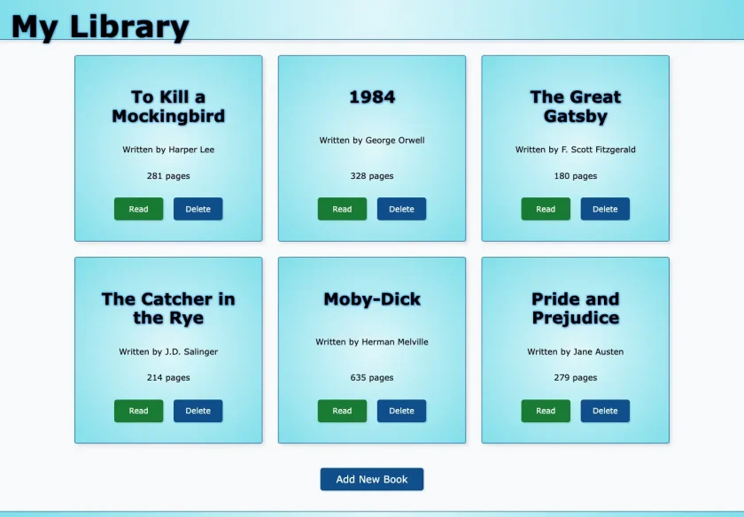
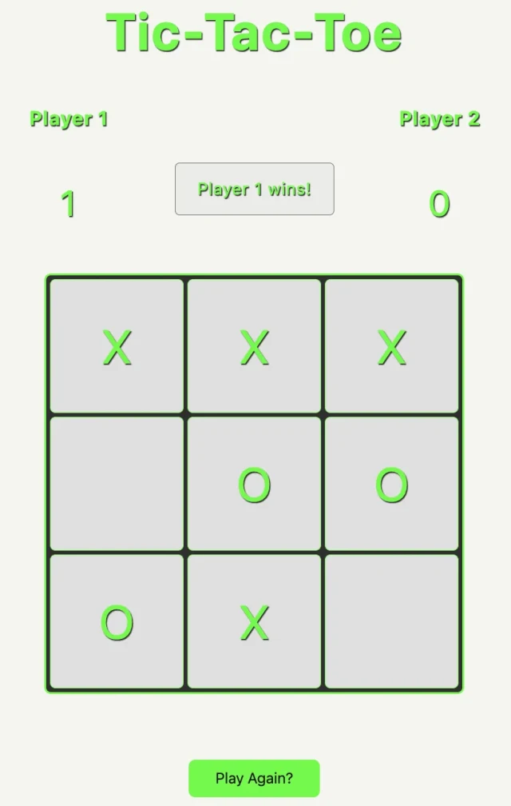

Library App
Add books, track reading status, and manage a browser-persisted personal collection.
View Project →
Add books, track reading status, and manage a browser-persisted personal collection.
View Project →

A small learning project for practicing game state, win detection, scorekeeping, and responsive interaction.
View Project →